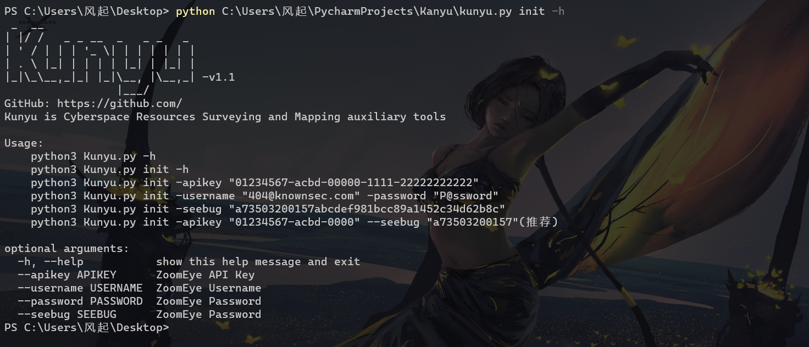
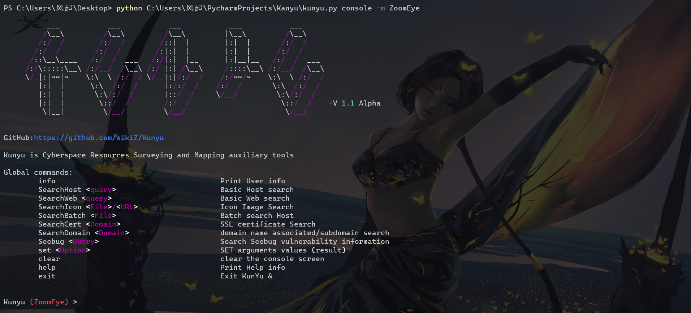
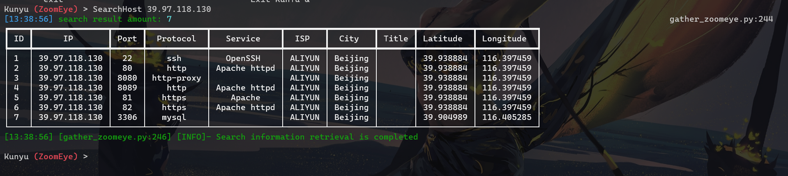
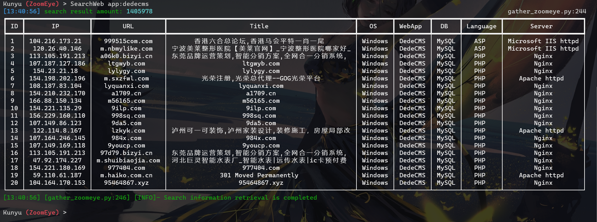
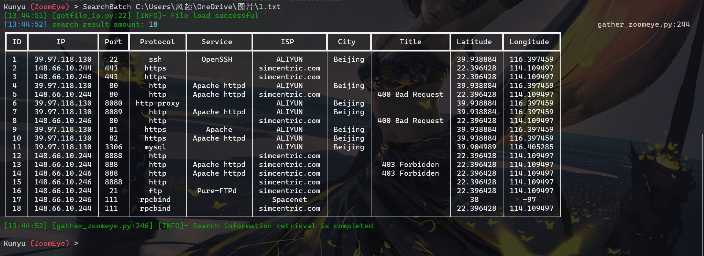
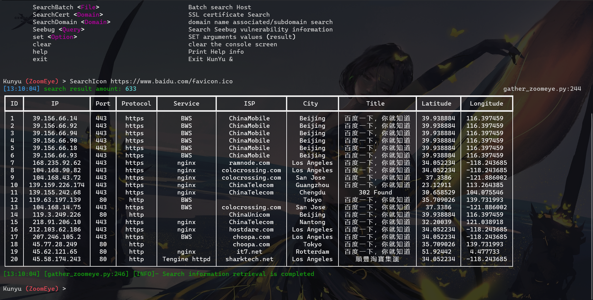
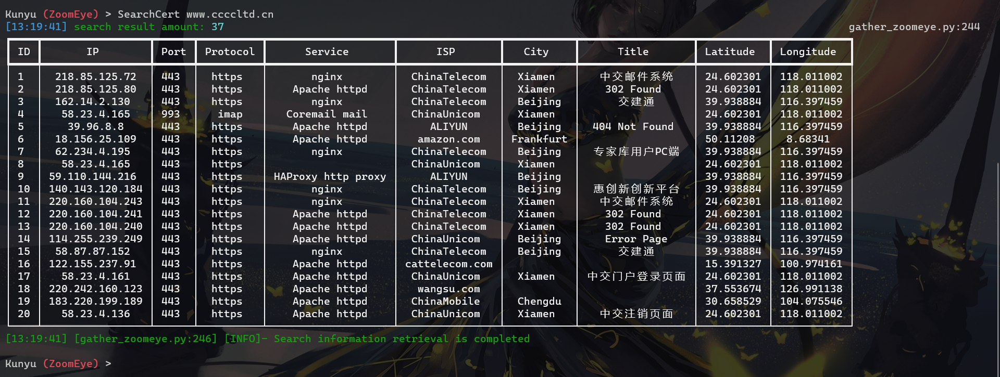
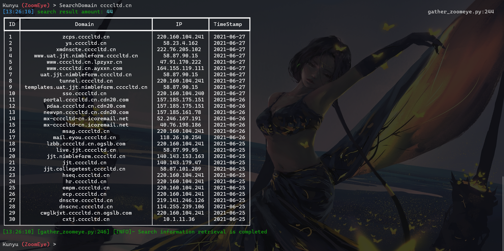
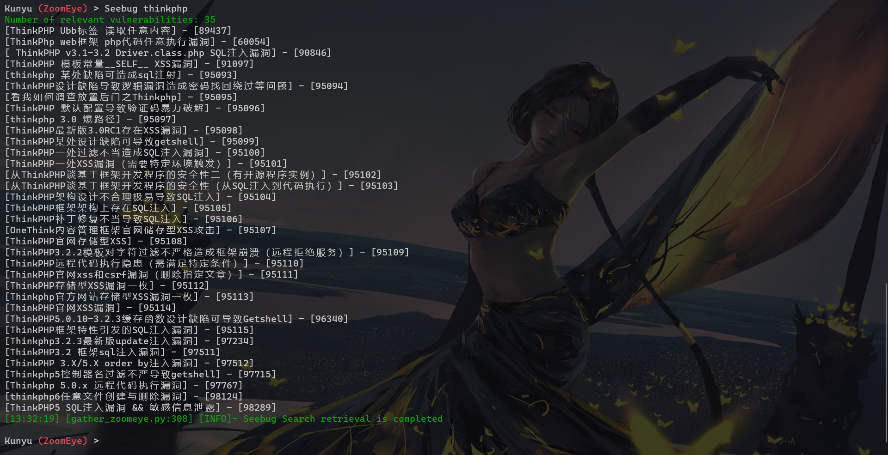
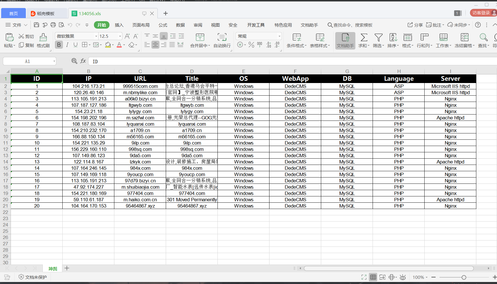

#0x00 介绍
Kunyu (坤舆)，名字取自 <坤舆万国全图> ，测绘实际上是一个地理信息相关的专业学科，针对海里的、陆地的、天上的地理信息进行盘点。同样应用于网络空间，发现未知、脆弱的资产也是如此，更像是一张网络空间地图，用来全面描述和展示网络空间资产、网络空间各要素及要素之间关系，以及网络空间和现实空间的映射关系。所以我认为“坤舆”还是比较贴合的。
Kunyu(坤舆)，旨在让企业资产收集更高效，使更多安全相关从业者了解、使用网络空间测绘技术。
对于 kunyu 的使用，应用场景可以有很多，例如：
需要Python3以上的支持
git clone https://github.com/wikiZ/Kunyu.gittar -xvf Kunyu.tarcd Kunyupip3 install -r requirements.txtpython3 kunyu.py
在第一次运行程序时通过输入以下命令进行初始化操作，提供了其他登录方式，但是推荐使用API的方式，因为用户名/密码登录需要额外做一次请求，所以理论上API的方式会更加高效(Seebug API选填，但是不填写无法使用Seebug相关命令)。
xxxxxxxxxxpython3 Kunyu.py init -apikey your <zoomeye key> --seebug <your seebug key>

xxxxxxxxxxpython Kunyu.py console -m module <ZoomEye>

ZoomEye
x
Global commands: info Print User info SearchHost <query> Basic Host search SearchWeb <query> Basic Web search SearchIcon <File>/<URL> Icon Image Search SearchBatch <File> Batch search Host SearchCert <Domain> SSL certificate Search SearchDomain <Domain> domain name associated/subdomain search Seebug <Query> Search Seebug vulnerability information set <Option> SET arguments values (result) clear clear the console screen help Print Help info exit Exit KunYu &OPTIONS
xxxxxxxxxxZoomEye:page <Number> 查询返回页数(默认查询一页，每页20条数据)dtype <0/1> 查询关联域名/子域名(设置0为查询关联域名，反之为子域名)
这里我们使用 ZoomEye 进行演示，因为相比较而言功能更加全面。
HOST 主机搜索

Web 主机搜索

批量 IP 搜索

Icon 搜索
在搜集企业资产时，我们可以使用这样的方式进行检索相同 ico 图标资产，在关联相关企业资产时，通常会有不错的效果。但是需要注意的是如果某些站点也使用这个 ico 图标，可能会关联出无关资产(但是无聊用别人 ico 图标的人总归是少数吧)。支持url或本地文件的方式搜索。

SSL证书搜索
通过 SSL 证书的序列号进行查询，这样关联出来的资产较为精准，能搜索出使用相同证书的服务。碰到https站点时，可以通过这样的方式。

关联域名/子域名搜索
对关联域名以及子域名进行搜索，默认查询关联域名，可以通过设置 dtype 参数设置两种模式。

Seebug漏洞查询
这里就比较简单了，通过输入想要查找的框架、设备等信息，查询历史相关漏洞，这里后期会进行改进，升级。

数据结果
大家可能好奇查询的数据呢？都保存在项目下 OUTPUT 目录里啦，根据时间戳创建目录，单次启动的所有查询结果都在一个目录下。

其实还有很多的思路，但是作为 Alpha 版本先这样，后期会不断进行完善的，希望 Kunyu (坤舆)能够让更多安全从业者所知，谢谢各位的支持。
工具框架有参考昆仑镜、Pocsuite3，都是非常棒的作品。
感谢 Knowsec 404 Team 的全体小伙伴。